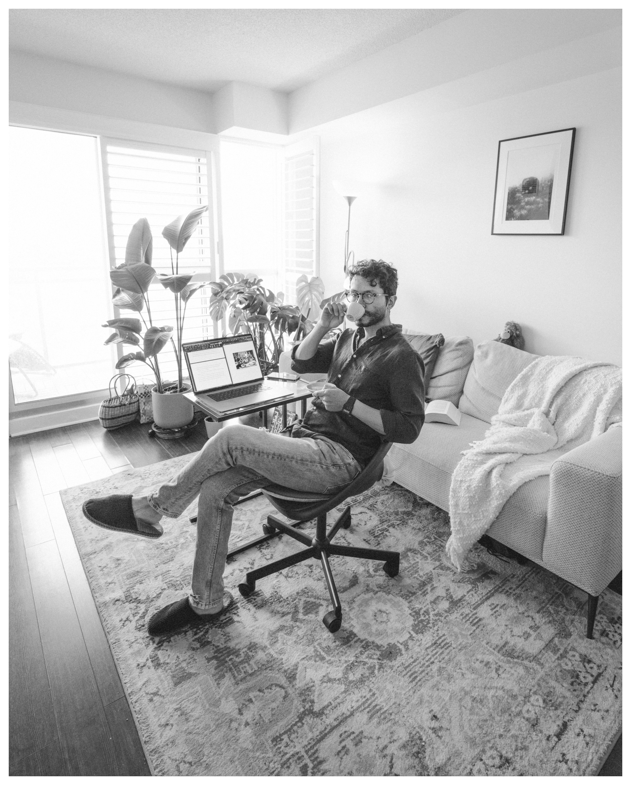

Ando was born in Bogotá Colombia and currently lives in Toronto Canada, where he enjoys taking photos of trees. In his work he explores the city as an extension of the mind of its observer and the feedback effect this has: how the cities we live in shape our minds and our mental maps. He uses a combination of medium format film, 35mm film, and digital to capture his images.
